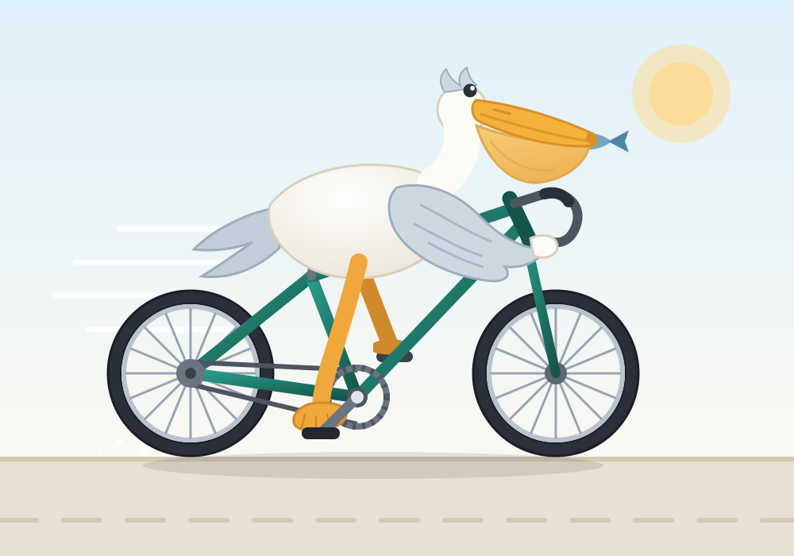
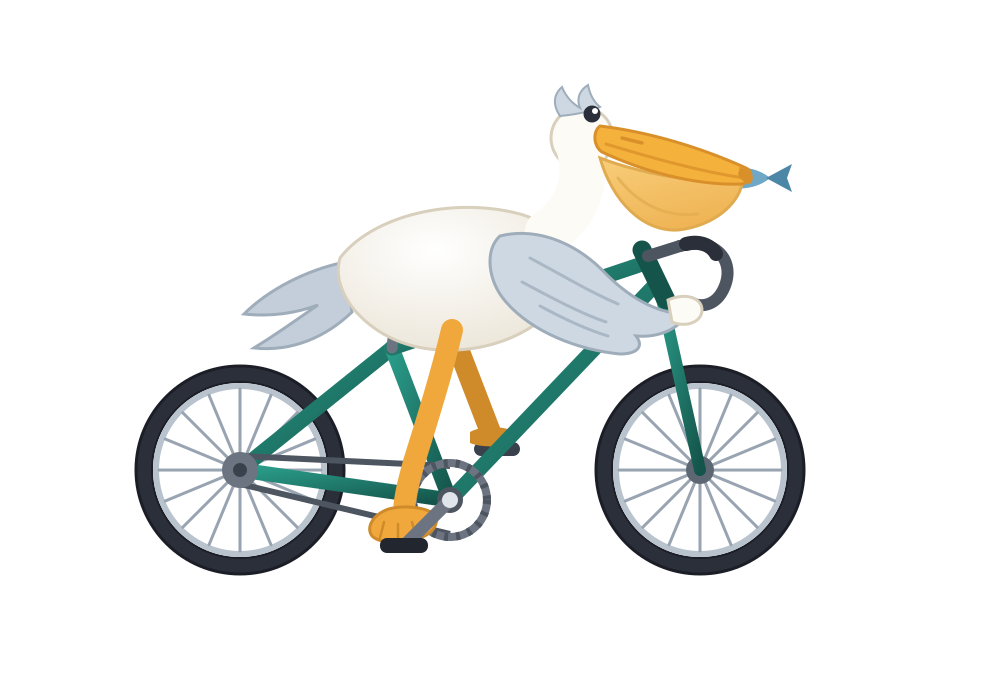

Ручной вектор (без генеративных моделей): один SVG, собранный скриптом
build_svg.py — спицы и геометрия рамы считаются кодом,
перья и клюв нарисованы кривыми Безье.

Дорога, солнце, линии скорости и тень — готовая иллюстрация.

Только пеликан и велосипед — для вставки куда угодно (фон — прозрачный).